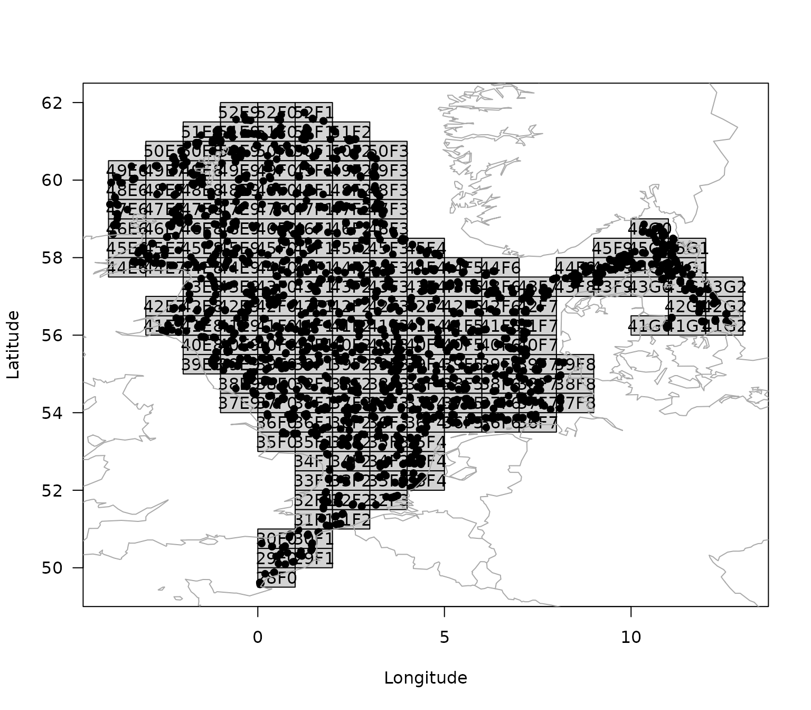

Step-by-step guide to work with the ICES' DATRAS database
Source:vignettes/tutorial.Rmd
tutorial.RmdThe goal of the DATRASextra is to make it easy to work with ICES’ DATRAS database by providing user-friendly, well-document functions, detailed vignettes, and building on the powerful DATRAS R package.
This vignette sets you up for working with ICES DATRAS data base by taking you through the whole process from installing DATRASextra and downloading DATRAS, to summarizing and plotting observations from the scientific surveys.
Outline:
- Install DATRASextra
- Download ICES DATRAS
- Read-in DATRAS
- Clean DATRAS
- Get Weight by haul
- Summary
- References
Install DATRASextra
To get started, make sure to install the most recent package version from GitHub:
## Install the package
remotes::install_github("tokami/DATRASextra")The package can be loaded into the R environment:
## Load the package into R
library(DATRASextra)Download DATRAS
The DATRAS data base is a large compilation of the majority of scientific bottom-trawl surveys in the Northeast Atlantic. You can get an overview of included surveys with:
## List scientific surveys in DATRAS
list_surveys()
#> survey years quarters
#> 1 BITS 1991-2025 1(35), 2(10), 3(6), 4(34)
#> 2 BTS 1985-2024 1(19), 3(40)
#> 3 BTS-GSA17 2016-2023 4(8)
#> 4 BTS-VIII 2007-2024 4(15)
#> 5 Can-Mar 1970-2021 1(9), 3(52), 4(8)
#> 6 DWS 2006-2009 3(3), 4(1)
#> 7 DYFS 1985-2024 3(40), 4(40)
#> 8 EVHOE 1997-2024 4(28)
#> 9 FR-CGFS 1988-2024 4(37)
#> 10 FR-WCGFS 2018-2024 3(7)
#> 11 IE-IAMS 2016-2024 1(9), 2(8)
#> 12 IE-IGFS 2003-2024 4(22)
#> 13 IS-IDPS 2009-2009 3(1)
#> 14 NIGFS 2005-2024 1(20), 4(18)
#> 15 NL-BSAS 2019-2024 3(6), 4(5)
#> 16 NS-IBTS 1965-2025 1(61), 2(14), 3(34), 4(9)
#> 17 NS-IDPS 2009-2016 1(1), 3(3)
#> 18 NSSS 2008-2024 4(17)
#> 19 PT-IBTS 2002-2023 4(19)
#> 20 ROCKALL 1999-2009 3(9)
#> 21 SCOROC 2011-2024 3(14)
#> 22 SCOWCGFS 2011-2025 1(14), 4(14)
#> 23 SE-SOUND 2011-2023 1(13), 3(7), 4(6)
#> 24 SNS 1985-2024 3(36), 4(16)
#> 25 SP-ARSA 1996-2024 1(22), 4(21)
#> 26 SP-NORTH 1990-2024 3(9), 4(35)
#> 27 SP-PORC 2001-2024 3(24), 4(5)
#> 28 SWC-IBTS 1985-2010 1(26), 2(1), 4(20)
#> description
#> 1 Baltic International Trawl Survey
#> 2 Beam Trawl Survey
#> 3 Beam Trawl Survey - SoleMon (Adriatic survey) - GSA17
#> 4 Beam Trawl Survey - Bay of Biscay (VIII)
#> 5 Canadian Maritimes trawl survey
#> 6 Deepwater Surveys
#> 7 Inshore Beam Trawl Survey
#> 8 French Southern Atlantic Bottom Trawl Survey
#> 9 French Channel Ground Fish Survey
#> 10 French Western English Channel Ground Fish Survey
#> 11 Irish Anglerfish and Megrim Survey
#> 12 Irish Ground Fish Survey
#> 13 Irminger Sea International Deep Pelagic Survey
#> 14 Northern Ireland Ground Fish Survey
#> 15 Netherlands Industry survey on Turbot and Brill
#> 16 North Sea International Bottom Trawl Survey
#> 17 Norwegian Sea International Deep Pelagic Survey
#> 18 North Sea Sandeel Survey
#> 19 Portuguese International Bottom Trawl Survey
#> 20 Scottish Rockall Survey - old (until 2010)
#> 21 Scottish Rockall Survey - new (from 2011)
#> 22 Scottish West Coast Groundfish Survey (from 2011)
#> 23 Sweden Sound Survey
#> 24 Sole Net Survey
#> 25 Spanish Gulf of Cadiz Bottom Trawl Survey
#> 26 Spanish North Coast Bottom Trawl Survey
#> 27 Spanish Porcupine Bottom Trawl Survey
#> 28 Scottish West Coast Bottom Trawl Survey (up to 2010)The download_datras function allows you to download
information for any of these surveys. If the arguments
surveys and years are not specified (i.e.,
NULL), all surveys and years are downloaded, wich can take
a while (~ 30-60min).
If not the whole database is required, the surveys and
years arguments allow to specify specific surveys and
years. For example, the Sole Net Survey (SNS) in 2023 could
be downloaded to a temporary directory with:
## select survey
survey <- "SNS"
## create temporary directory
tmp <- tempdir()
## download SNS for 2023
download_datras(surveys = survey, years = 2023, dir = tmp)If no directory (argument dir) is specified, the data is
downloaded into the current working directory (use getwd()
to see your current working directory). The function compresses
downloaded data into “zip” archives. Note, that if a year is specified
in which a specific survey did not operate, an empty file is created in
the specified folder. However, the next function just reads in non-empty
files.
DATRAS includes three main data sets, HH with
information on haul level, HL with information on species
level and the important information on numbers by length, and
CA with information on the individual level, such as
individual weight, age readings, or maturity scores. The third data set
with the biological information (CA) can be quite large and
might not be required for some projects. In that case, setting the
argument download.ca = FALSE allows you to to omit this
data set from the download and save some time and memory.
Read-in DATRAS
Next, we can read the downloaded survey information into R:
surv0 <- read_datras(file.path(tmp, survey))The path can point to a specific file that you want to read in or to a whole directory with any number of files.
Clean DATRAS
Now, the surv0 object contains the survey information in
the usual datras_raw format of the DATRAS package.
(TODO: Link to more information about this data type or provide more
information here.) It make sense to clean_datras the data and for
example only use valid hauls. This can be done manually with the
subset() function or by using some recommended cleaning
steps with the clean_datras() function. This function also
allows us to make a relevant subset of the database based on our
needs.
surv0 <- dab
surv <- clean_datras(surv0)By default, this function also imputes missing depth information.
We can plot the resulting survey information with:
plot(surv)
#> NULL